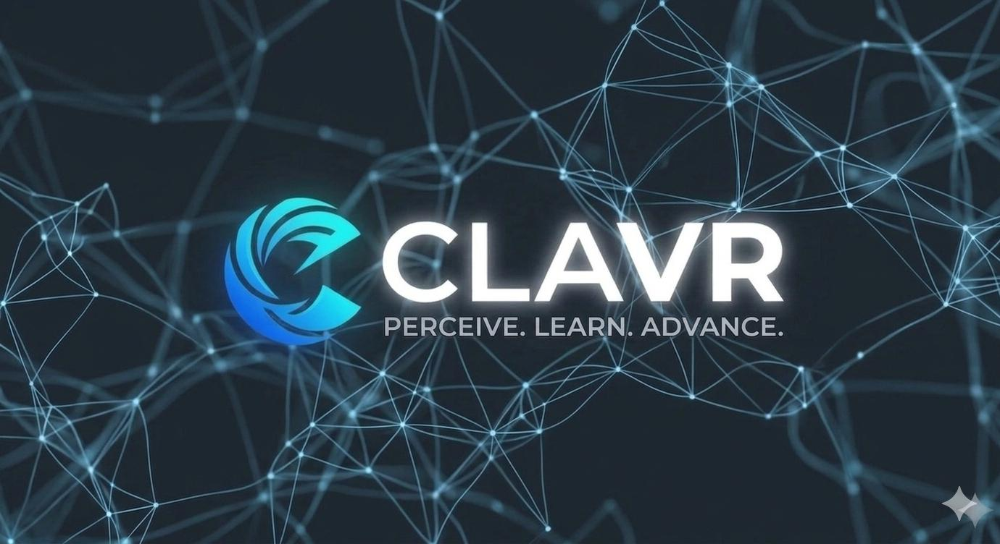

Computer Learning & Advanced Visual Research Lab
Perceive. Learn. Advance.
CLAVR (pronunced:klay-vur) sits at the critical turning point of computer vision and unsupervised machine learning. By building generalized, self-supervised models that process complex visual inputs without human intervention, our lab creates a foundational computing umbrella capable of advancing diverse real-world systems from optimizing battery grids and parsing geospatial terrain to automating precision ecosystems.
Vision
To advance a future where computer vision and machine learning systems can learn robust, meaningful representations from the world with minimal reliance on human-labeled data, enabling scalable, adaptable AI that generalizes across real-world domains from healthcare to agriculture to environmental monitoring.
Mission
Our lab develops unsupervised and self-supervised learning methods for object detection, image retrieval, and large-scale vision models, working at the intersection of theory and application to ensure our methods solve real problems, while training the next generation of researchers through mentorship and open collaboration.
Research Focus
Building algorithms such as clustering, self-supervised learning, generative modeling, that extract meaningful structure from unlabeled visual data, reducing dependence on annotation.
Designing and optimizing large-scale vision architectures for deployment in resource-constrained and real-world environments.
Ensuring models perform reliably under domain shift, occlusion, and varying conditions, validated across diverse real-world datasets.
Partnering with domain experts in healthcare, agriculture, and environmental monitoring to translate methods into real-world impact.